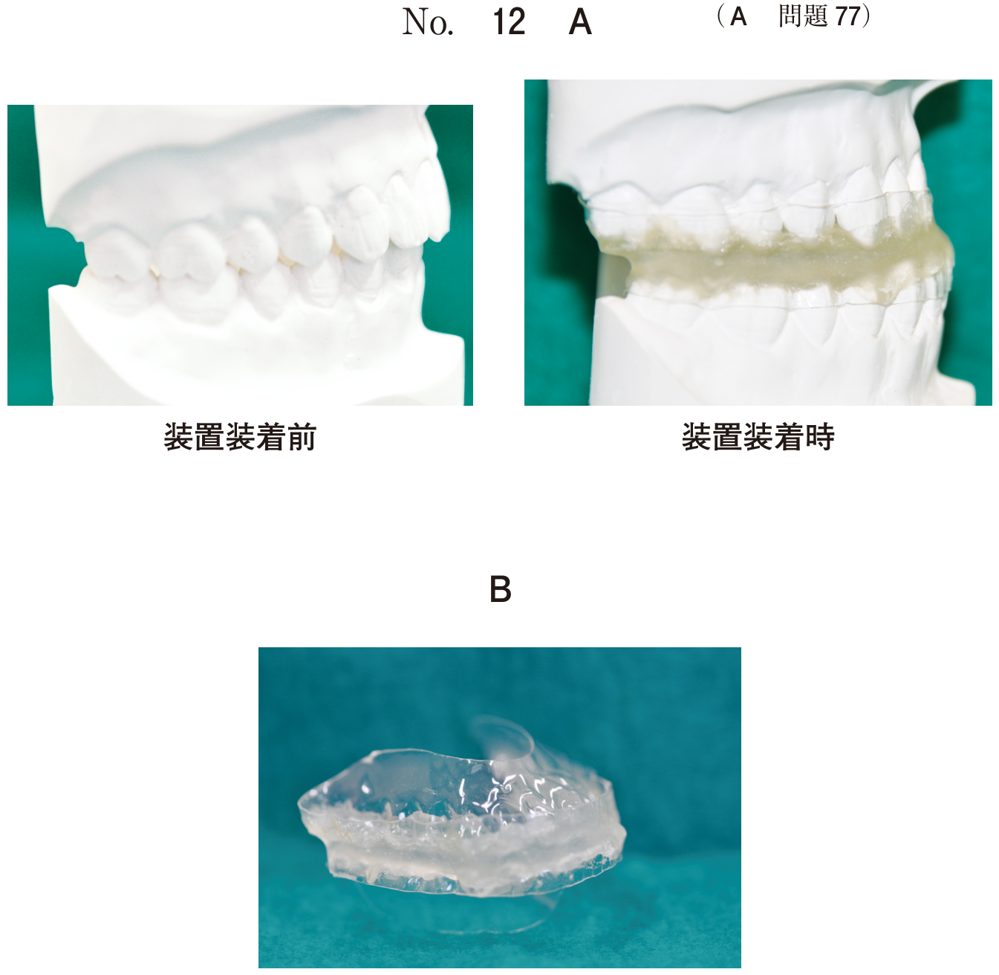
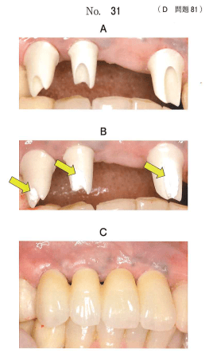
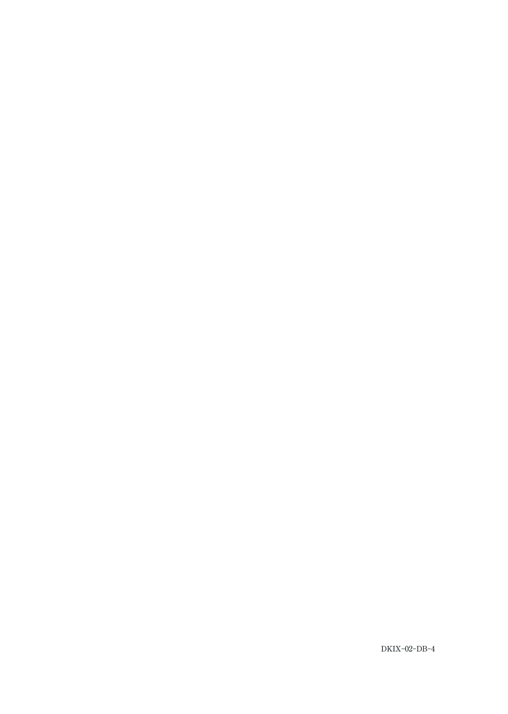
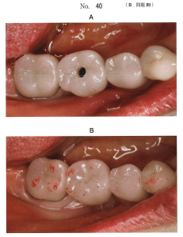

| 項目 | スクリュー固定式 | セメント固定式 |
|---|---|---|
| 撤去の自由度 | 容易 | 困難 |
| メインテナンス | 容易 | 困難 |
| 審美性 | アクセスホール露出 | 良好 |
| 技工操作 | 複雑 | 容易 |
| 固定様式特有の合併症 | スクリューの緩み・破折 | セメントの残留→周囲炎 |
| 咬合面形態 | アクセスホールで制限あり | 制限なし |
スクリュー固定式の上部構造には、スクリューを締結するための穴（アクセスホール）がある。
下顎右側大臼歯部に装着されたインプラント上部構造の写真（別冊No.16）を別に示す。
アの装着法がイより優れるのはどれか。2つ選べ。

【解説】アはスクリュー固定式（アクセスホールが見える）、イはセメント固定式。スクリュー固定式の利点はセメントの取り残しがないこと、術者によるメインテナンスが容易であること。審美性はセメント固定式の方が優れる。
48歳の女性。上顎前歯部の審美不良を主訴として来院した。診察の結果、固定性インプラント義歯による治療を行うこととした。上部構造を装着する前（別冊No.31A、B）と装着後の口腔内写真（別冊No.31C）を別に示す。
矢印の処置の目的はどれか。1つ選べ。

【解説】矢印で示されているのはPTFEテープ（白いテープ）である。セメント固定式の上部構造装着時に、装着セメントがインプラント周囲に迷入するのを防止するためにアバットメント周囲に巻く。セメントの残留はインプラント周囲炎の原因となる。
インプラント治療におけるアバットメント装着時とクラウン試適時の口腔内写真（別冊No.4）を別に示す。
クラウン装着時に考慮すべきなのはどれか。2つ選べ。

【解説】セメント固定式のインプラント上部構造では、仮着用セメントを用いる（撤去の可能性を考慮）。また、インプラントは歯根膜がないため側方運動時の咬合接触を避けるよう調整する。セメントで満たすと余剰セメントが増え、除去は見える範囲だけでなく徹底的に行う必要がある。
61歳の女性。右側での咀嚼困難を主訴として来院した。診察の結果、右側第一大臼歯相当部にインプラントによる補綴処置を行うこととした。上部構造試適時の口腔内写真（別冊No.40A）と装着終了時の口腔内写真（別冊No.40B）を別に示す。
この間の処置過程を実施の順番に並べよ。

【解説】スクリュー固定式の上部構造装着手順：隣接接触関係の調整→咬合接触調整→アバットメントスクリューの締結→封鎖材の挿入→コンポジットレジンの充填。スクリュー締結後にアクセスホールを封鎖する。